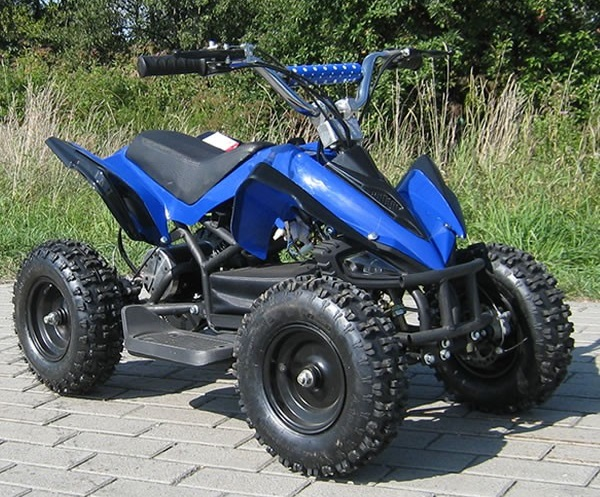
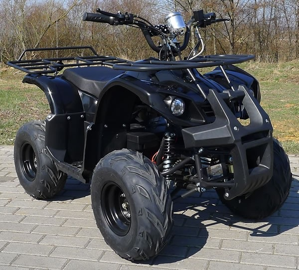

Category: ATVs

This electric ATV is intended for children, adolescents and adults, and can be used on quite steep slopes. Provides a very quiet and reliable propulsion. It is not approved, however, for use on public roads.
Specifications:
- DC Brushless Motor with chain drive
- Max noise: Less than 58dB(A)
- Top speed: approx. 25km/h (Can be locked at 3 speeds: 7, 15, and top speed 25km/h)
- Range per charge: approx. 25-30km
- Incline: > 15 degrees (Depending on the weigh)
- Charging time: 4-5 hours
- Battery: 36V/12Ah
- Sealed silicon battery
- Charging from 230Vac 10/16A power outlet
- Load capability: 65kg
- Batteries: 38kg
- Battery-charger: 230Vac (Insertive type)
- Service Life Batteries: approx. 6-12 yrs
- Warranty: 1 year
- Dimensions: 105 (L) x 55 (W) x 69 (H) cm.
- Carton: 103 x 58 x 50 cm.
- Diameter: 6" (Front: 4.10-6 and Rear: 13 x 5.00-6)

This electric ATV is intended for adolescents and adults, and can be used on quite steep slopes. It comes with complete rubber wheels with air in front & rear and a four-wheel handbrake. It also has hydraulic disc brakes at the rear and thumb at the front. It is not approved, however, for use on public roads.
Specifications:
- DC Brushless Motor with chain drive (1 st.): 48Vdc/1000 watts with Gear. 2WD (96% efficiency and high torque)
- Very quiet and reliable propulsion
- Max Noise: Less than 58dB(A)
- Top speed: approx. 30km/h (Can be locked at 10km/h)
- Shrimp width per charge: approx. 30-50km
- Incline: Greater than 14 degrees (Depending on the weight of the person)
- Charging time: 5-7 hours
- Battery: 48V/20Ah
- Sealed Silicon
- Charging from 230Vac 10/16A power outlet
- Load capability: 100kg
- Battery-charger: 230Vac (Insertive type)
- Service Life Batteries: approx. 6-12 years
- Warranty: 1 year
- Dimensions: 145 (L) x 82 (W) x 92 (H) cm.
- Carton: 116 x 76 x 62 cm
- Diameter: 7" (Front and Read: 16 x 8.00-7)